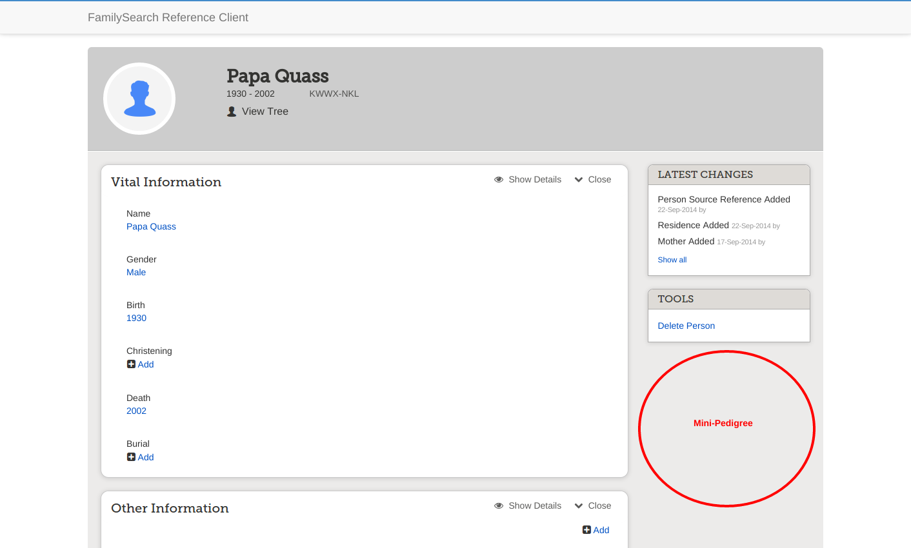

The FamilySearch Reference Client
Open-source implementation of the Family Tree UI
Written as a Single-Page Application in Javascript
using the REST API
Dallan Quass
Lynn Monson
Dovy Paukstys
Tour
Select Person
Person
Person (scroll down)
Edit Name
Chinese

Add Event
Add Source
Source Box
Why was it developed?
- Make it easy for partners to allow their customers to access the FamilySearch tree using an easily-extensible framework
- Provide a set of re-usable components for use by partners
- A real-world example of accessing the FamilySearch Tree using the FamilySearch Javascript SDK
Disclaimers
- Not official - not an official FamilySearch project
- Not supported - code is provided as-is
- Not maintained - everything currently works...
What can I do with it?
- Have you ever thought you could improve upon the FamilySearch UI?
- Fork this project and extend it
- Do you want to allow people to edit names and are intimidated by the complexity?
- Use the name edit component from this project
- Would you like to understand better how to use the FamilySearch REST API?
- Review the source for this project
How can I get started?
Install pre-requisites
- Install node.js (nodejs.org)
- npm install -g bower install bower
- npm install -g grunt-cli install grunt
- Install PhantomJS (phantomjs.org)
How can I get started?
Get an App Key
Contact FamilySearch developer support if you don't already have one
Ask FamilySearch developer support to add http://localhost:9000/#!/auth as an OAuth redirect URL
How can I get started?
Run the code
- clone github.com/rootsdev/familysearch-reference-client
- npm install install build dependencies
- bower install install client dependencies
- grunt watch launch a server and watch for changes
- Visit http://localhost:9000
- Sign in using your sandbox username and password
AngularJS


AngularJS Framework
- Models
- Views
- Controllers
- Directives (components)
- Filters
- Services
- dependency injection
- easy unit tests
index.html
<head>
</head>
<body>
</body>
app.js
angular.module('fsReferenceClient', [ 'fsReferenceClientShared', 'templates-app', 'templates-common', 'ui.bootstrap', 'ui.router.state', 'ui.router'])
.config(function($stateProvider, $urlRouterProvider) {
$urlRouterProvider.otherwise('/');
})
.config(function(fsApiProvider) {
fsApiProvider
.setClientId('WCQY-7J1Q-GKVV-7DNM-SQ5M-9Q5H-JX3H-CMJK')
.setEnvironmentName('sandbox')
.setRedirectUri('http://localhost:9000/#!/auth');
})
.config(function(fsLocationProvider) {
var prefix = '/#';
fsLocationProvider.configure({
getPersonLocation: function(personId) {
return {
prefix: prefix,
path: '/person/'+personId
};
},
...
});
})
app.js (continued)
.controller('AppController', function ($scope) {
$scope.environment = 'Sandbox';
$scope.$on('$stateChangeStart', function(event, toState) {
if (toState.resolve) {
$scope.busy = true;
}
});
$scope.$on('$stateChangeSuccess', function() {
$scope.busy = false;
});
$scope.$on('$stateChangeError', function() {
$scope.busy = false;
});
});
person.js
angular.module('fsReferenceClient')
.config(function ($stateProvider) {
$stateProvider.state('person', {
url: '/person/:personId',
controller: 'PersonController',
templateUrl: 'person/person.tpl.html',
data: { pageTitle: 'Person' },
resolve: {
person: ['$stateParams','fsApi',function($stateParams, fsApi) {
return fsApi.getPerson($stateParams.personId).then(function (response) {
return response.getPerson();
});
}],
sources: ['_','$q','$stateParams','fsApi',function(_, $q, $stateParams, fsApi) {
return fsApi.getPersonSourcesQuery($stateParams.personId).then(function(response) {
return _.map(response.getSourceRefs(), function(sourceRef) {
return {
ref: sourceRef,
description: response.getSourceDescription(sourceRef.$sourceDescriptionId),
id: sourceRef.id
};
});
});
}]
}
});
})
person.js (continued)
.controller('PersonController', function ($scope, $state, $rootScope, person, sources, fsApi, fsUtils, fsCurrentUserCache) {
var sections = ['vitalFacts', 'otherInfo', 'familyMembers', 'sources', 'discussions', 'notes' ];
$scope.states = {};
sections.forEach(function(section) {
$scope.states[section] = {value: 'open'};
});
$scope.person = person;
$scope.sources = sources;
sources.forEach(function(source) {
fsUtils.mixinStateFunctions($scope, source);
});
var unbindRestored = $rootScope.$on('restored', function() {
fsApi.getPerson($scope.person.id).then(function (response) {
fsUtils.refresh($scope.person, response.getPerson());
});
});
$scope.$on('$destroy', unbindRestored);
$scope.$on('delete', function(event, person, changeMessage) {
event.stopPropagation();
person._busy = true;
person.$delete(changeMessage).then(function() {
person._busy = false;
fsCurrentUserCache.getUser().then(function(user) {
$state.go('person', { personId: user.personId });
$rootScope.$emit('alert', {level: 'success', text: person.$getDisplayName()+' deleted'});
});
});
});
});
person.tpl.html
fsPersonProfile.js
angular.module('fsReferenceClientShared')
.directive('fsPersonProfile', function (fsLocation) {
return {
templateUrl: 'fsReferenceClientShared/fsPersonProfile/fsPersonProfile.tpl.html',
scope: {
person: '='
},
link: function(scope) {
scope.treeHref = fsLocation.getTreeUrl(scope.person.id);
}
};
});
fsPersonProfile.tpl.html
{{person.$getDisplayName()}}
{{person.$getDisplayBirthDate()}} -
{{person.$getDisplayDeathDate()}}
{{person.id}}
Extending
Result
Re-Use Components
Fork
- Fork https://github.com/rootsdev/familysearch-reference-client
- create a directory for your components; e.g., src/common/dqComponents
dqPedigreeMini.js
angular.module('dqPedigreeMini', ['loDash', 'fsReferenceClientShared', 'dqPersonMini'])
.directive('dqPedigreeMini', function (_, fsApi) {
return {
templateUrl: 'dqComponents/dqPedigreeMini.tpl.html',
scope: {
personId: '@'
},
controller: function($scope) {
fsApi.getAncestry($scope.personId, {generations: 2}).then(function(response) {
$scope.persons = _.filter(response.getPersons(), function(person) {
return person.$getAscendancyNumber() >= 1 &&
person.$getAscendancyNumber() <= 7;
});
});
}
};
});
dqPedigreeMini.tpl.html
Mini Pedigree
<div dq-person-mini person="person"
is-focus="{{person.$getAscendancyNumber() == 1}}"
class="dq-pedigree-mini-person"
ng-class="'dq-pedigree-mini-pos'+person.$getAscendancyNumber()">
</div>
dqPersonMini.js
angular.module('dqPersonMini', [])
.directive('dqPersonMini', function () {
return {
templateUrl: 'dqComponents/dqPersonMini.tpl.html',
scope: {
person: '=',
isFocus: '@'
}
};
});
dqPersonMini.tpl.html
inject into person
The End
Slides are at https://github.com/DallanQ/fs-reference-client-2014-slides